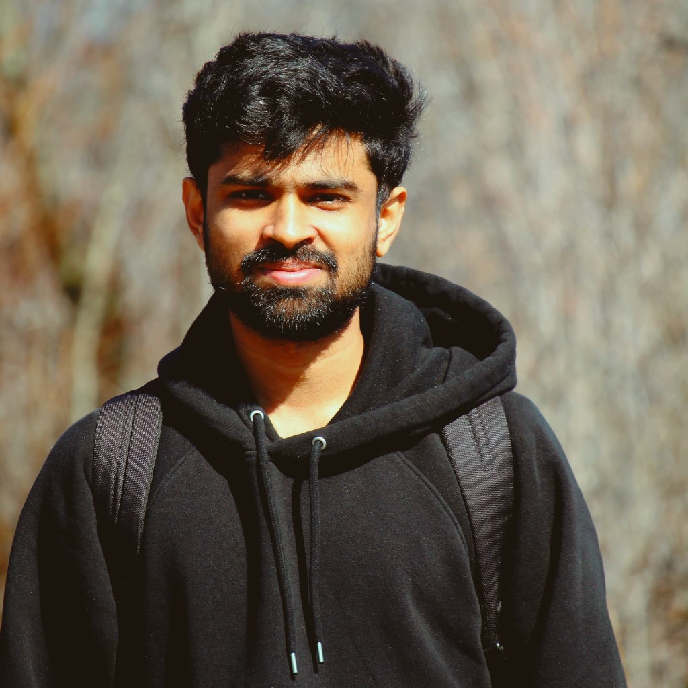

☰
My journey into cybersecurity began in 2019, during the last year of my college, when I attended a workshop and realized how critical it is to protect digital systems. At that time, during the COVID-19 lockdown in 2020, I taught myself Linux and started exploring the world of cybersecurity. What started as curiosity quickly became a passion. Since then, I have earned CEH, Security+, and CPT certifications and gained hands-on experience with Windows Server, Active Directory, VPNs, and network security through my Cybersecurity Capstone Project. I designed and secured enterprise networks, implemented VPNs, and performed vulnerability assessments, learning how every small detail can make a huge difference in keeping systems safe. I also created LiveLongX, a health-focused web platform, and am currently working on a DeepStride health band project, merging my love for technology and security with health informatics. Each project has taught me that cybersecurity is not just about systems—it’s about protecting people, their data, and their trust. I am preparing for CCNA to strengthen my networking knowledge and am now seeking opportunities in cybersecurity, networking, and IT security across Canada. I am driven by the desire to make digital spaces safer and to continue learning every day in this ever-changing field.

I enjoy analyzing threats and building strong defensive systems.
Network security, threat detection, and healthcare data protection.